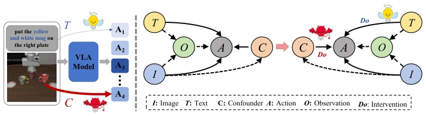
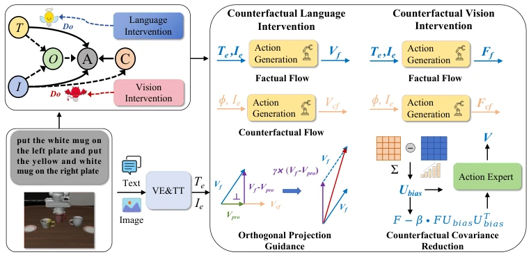
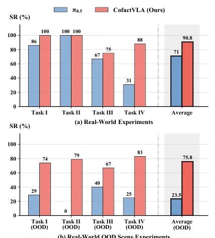
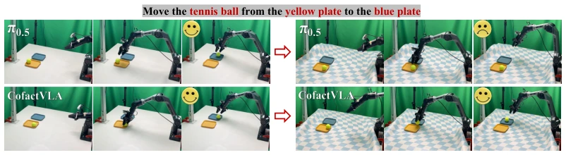
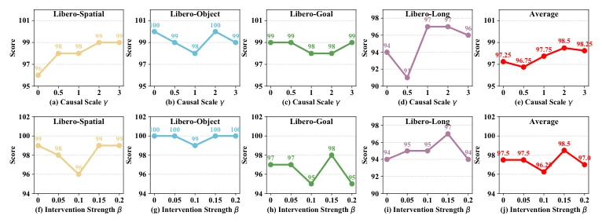
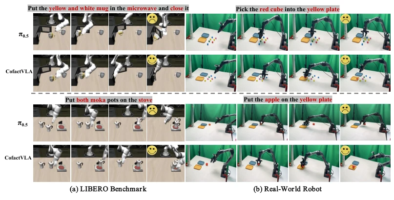
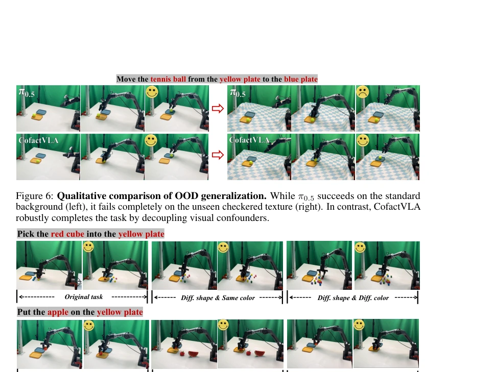
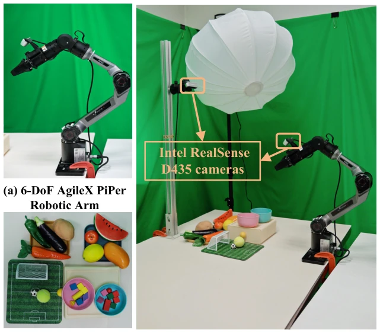
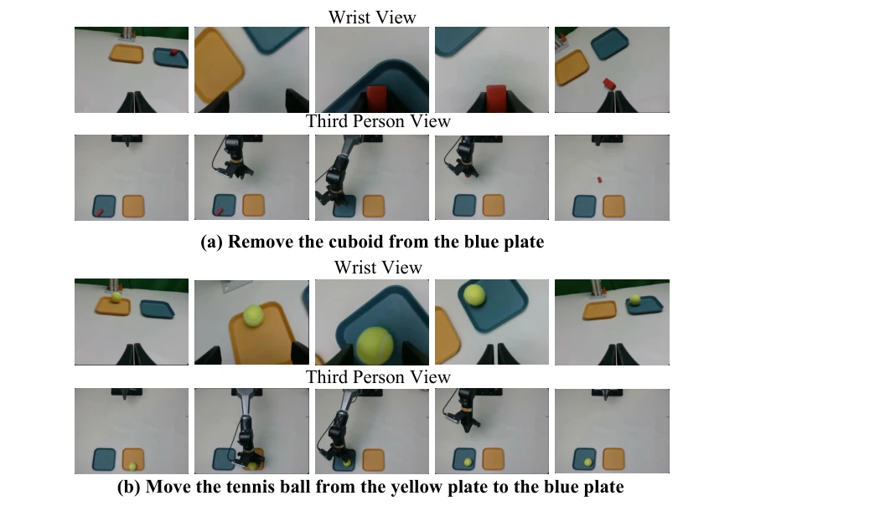
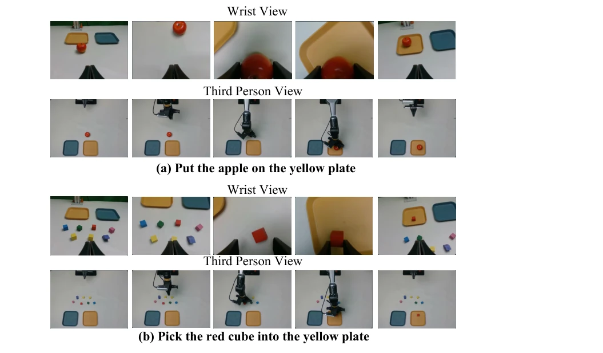

This paper treats the "eye disease" of VLA models—vision overriding language instructions. The Tsinghua team developed CofactVLA, using counterfactual intervention to eliminate visual distractors. The method is quite rigorous, involving orthogonal projection plus covariance reduction, sounding very mathematical. The experimental data is indeed impressive, with huge improvements in OOD scenarios, but the cost is an extra branch during inference, which might strain computational resources. Moreover, if the base model itself does not understand instructions, intervention alone cannot save it. However, incorporating causal inference into VLA is indeed a more appealing approach than simply stacking data, at least treating both symptoms and root causes.
VLA models have made great progress in robot control, but have a fatal weakness: Vision-Override. Because visual streams are too dense and language instructions too sparse in training data, models tend to take shortcuts, staring at conspicuous objects and forgetting what the user wants them to do. Existing methods rely either on data augmentation [10, 11] or inference-time guidance [13], but the former is hard to scale, and the latter easily pushes actions away from the distribution, leading to unsafe outcomes. This paper identifies this as a causal confounding problem, requiring fundamental decoupling of the entangled representations of vision and language, rather than post-hoc patching.

Figure 1: (a) Motivation: Visual modality inadvertently induces a spurious backdoor path (I 99K C →A). The visual confounder C acts as a shortcut that dictates the action A, overriding the true semantic intent T. (b) Our proposed Dual-path Deconfounding Graph: The red do-operator signifies Feature-Level Counterfactual Covariance Reduction (CCR), which explicitly suppresses the spurious visual confounder C. The blue do-operator signifies Action-Level Orthogonal Projection Guidance (OPG), which geometrically extracts and enhances the pure language intent T.
The overall framework is called Dual-path Deconfounding Graph (DDG). The core idea is to construct a counterfactual branch with a language mask. During forward propagation, both the real branch (with image and text) and the counterfactual branch (image only) are run simultaneously. Module 1: OPG (Action-level). In continuous flow matching, the velocity field of the real branch is orthogonally projected onto the counterfactual branch, subtracting visual bias and retaining pure language intent. This is safer than simple scalar subtraction, preventing action distribution shift. Module 2: CCR (Feature-level). Calculate the covariance difference between real and counterfactual features, penalize the positive eigenvalue space, suppress visual shortcuts, and retain causal semantics. This cleans features directly at the attention mechanism level. Thus, dual intervention at the feature and action levels cuts off spurious causal paths. Through geometric projection and mathematical penalties, it ensures actions strictly follow language instructions, rather than visual shortcuts.

Figure 2: The overall architecture of CofactVLA. (Left) Driven by the proposed Dual-path Deconfounding Graph (DDG), we propose an intervention framework to address the vision-override phenomenon. (Right) The framework consists of two core components dynamically built upon factual and counterfactual flows. To execute Language Intervention, Orthogonal Projection Guidance (OPG) geometrically extracts the pure semantic intent by projecting the factual flow Vf onto the counterfactual visual prior Vcf. To execute Vision Intervention, Contrastive Covariance Reduction (CCR) extracts the dominant visual confounder bias Ubias via the covariance difference of latent features to cleanse the features before feeding them to the action expert.
Simulation used LIBERO and LIBERO-Plus, real-world experiments used AgileX PiPer robotic arm. Baselines included comparisons with π0 [34], π0.5 [17], OpenVLA [14], etc. The metric is success rate. In results, LIBERO average 98.5%, SOTA. In OOD scenarios, real robot success rate improved by 52.3% (from 23.5% to 75.8%). Ablation experiments prove OPG and CCR are both useful, and orthogonal projection is better than scalar subtraction. Especially under complex visual interference, the model performance is more robust.

Figure 3: Performance comparison of real-world exper- iments and the evaluation of OOD scene.

Figure 6: Qualitative comparison of OOD generalization. While π0.5 succeeds on the standard background (left), it fails completely on the unseen checkered texture (right). In contrast, CofactVLA robustly completes the task by decoupling visual confounders.
其他图片Other Figures

Figure 4: Sensitivity analyses of intervention intensities. Top row: action-level causal scale γ. Bottom row: feature-level intervention strength β.

Figure 5: Qualitative comparison of mitigating the “vision-override” phenomenon on the (a) LIBERO Benchmark and the (b) Real-World Robot.

Figure 7: OOD generalization of CofactVLA: Visualizations from real-world experiments.

Figure 8: Our hardware platform for the real-world robot experiments.

Figure 9: Example of dual-view sample collection for Task I and Task II.

Figure 10: Example of dual-view sample collection for Task III and Task IV.